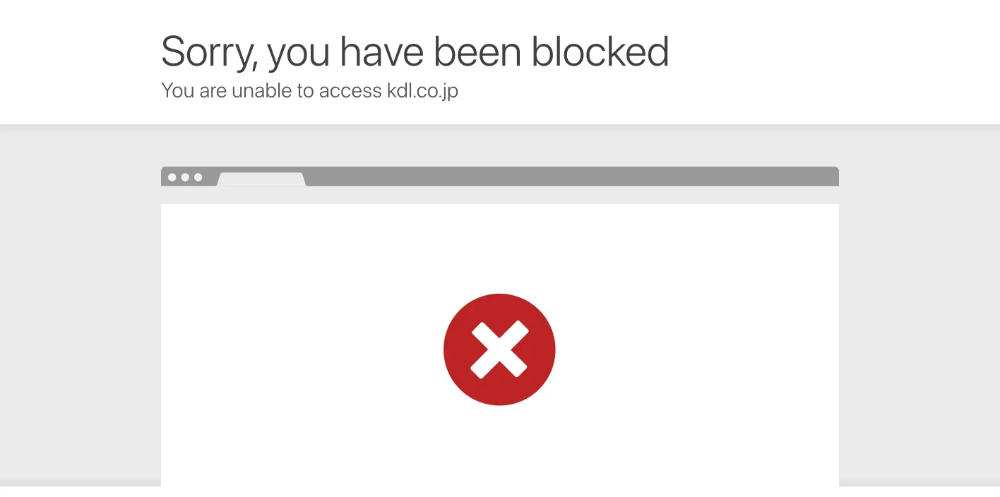
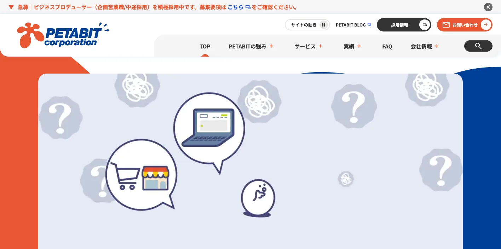
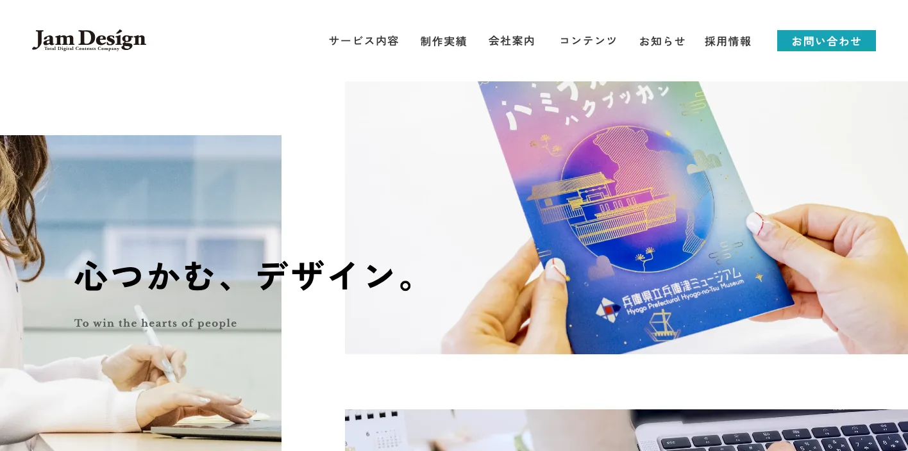
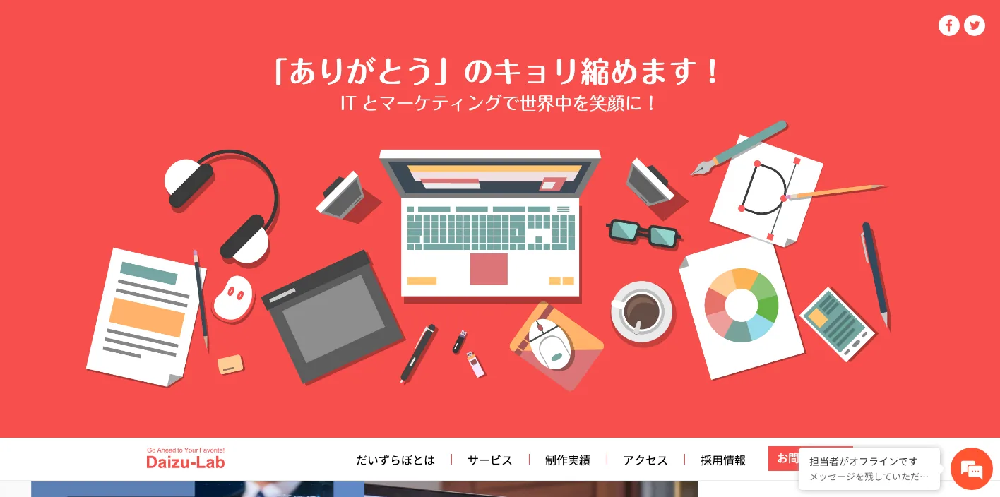
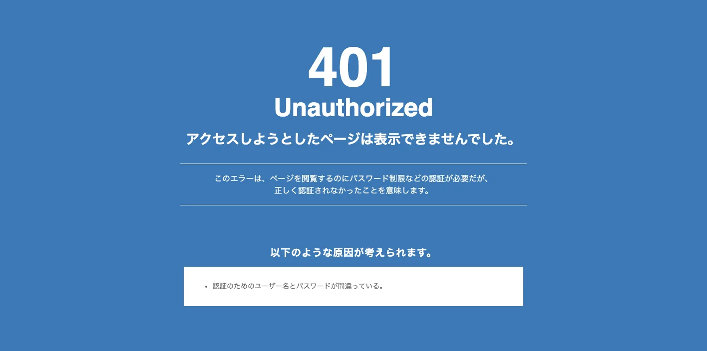
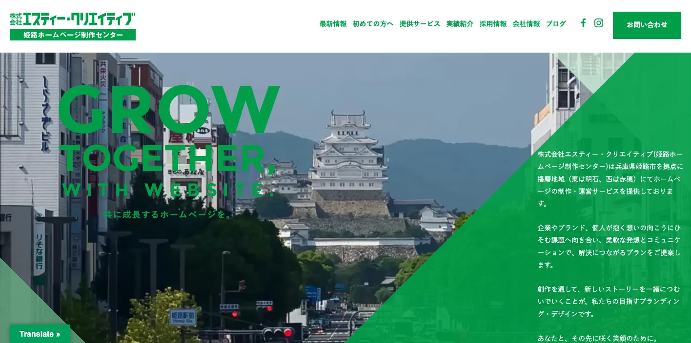
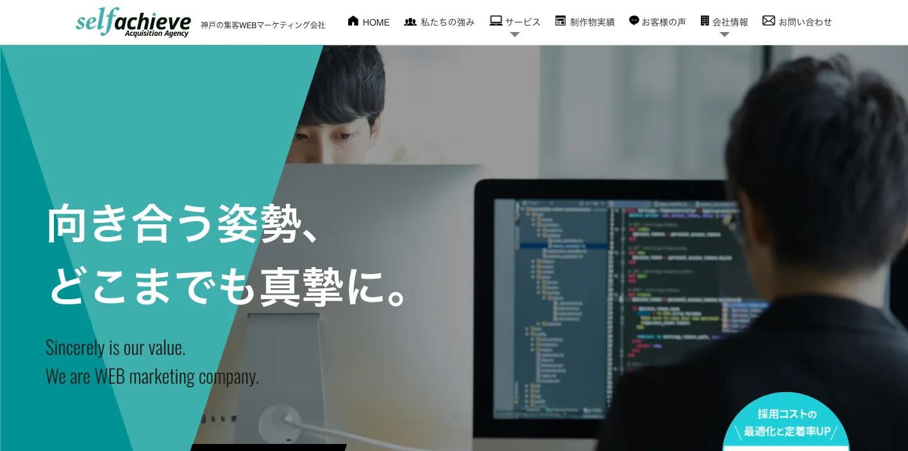
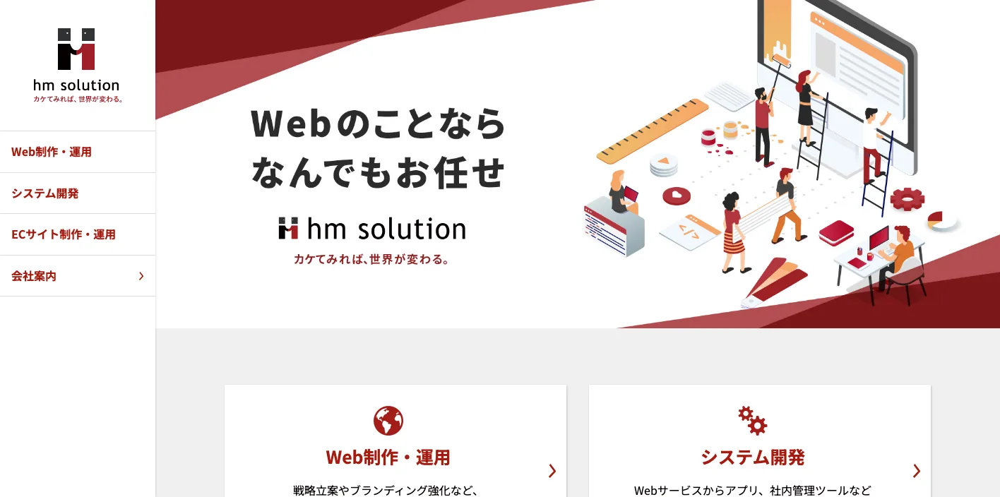
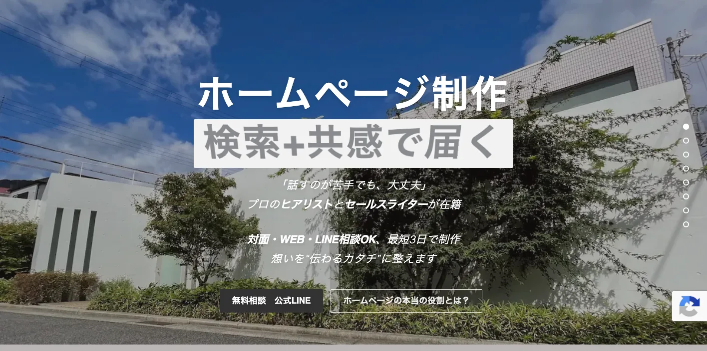

兵庫県でおすすめのLLMO会社10選｜費用相場と選び方もわかりやすく解説

兵庫県でLLMO会社を選ぶときは、「神戸のホームページ制作会社」だけで探すと判断を誤りやすくなります。神戸市は港湾、医療、大学、観光、EC、都市型サービスの文脈が強く、阪神間の西宮市・尼崎市・芦屋市・宝塚市は生活商圏や医療、教育、士業が重なります。姫路市・明石市・加古川市を含む播磨では製造業、建設、物流、採用が重要です。但馬、丹波、淡路では観光、一次産業、移動、季節性の説明が欠かせません。
兵庫県の推計人口ページでは、令和8年3月1日現在の推計人口が5,293,340人と公表されています。令和5年度兵庫県観光客動態調査では観光入込客数が1億2,232万人、ひょうご・神戸投資サポートセンターは、兵庫県の製造品出荷額の全国シェアを5.0％、都道府県別全国5位と説明しています。兵庫県のLLMOは、都市部だけでなく、港湾物流、播磨の工業、温泉・城・島しょ観光、地域採用まで分けて考える必要があります。
この記事では、兵庫県でLLMOに取り組むときに比較したい会社、選び方、費用相場をまとめます。基礎から確認したい方はLLMO対策の基礎記事、近隣商圏も比較したい方は大阪府の比較記事、京都府の比較記事、滋賀県の比較記事も参考にしてください。
目次

兵庫県でおすすめのLLMO会社10選
今回は、兵庫県内に拠点があり、Web制作、SEO、Webマーケティング、EC、システム開発、AI導入、MEO、採用広報、動画、ブランディングなどの公開情報を確認しやすい会社を中心に選びました。兵庫県内でLLMO専業を前面に出す会社はまだ多くありません。そのため、AIに引用される情報設計、FAQ、構造化データ、検索・広告・SNS・更新運用まで広げて支援できるかを見ています。
兵庫県では、神戸の都市型商圏、阪神間の生活サービス、播磨の製造業、但馬・丹波・淡路の観光と地域採用で、AIに聞かれる質問が変わります。まずは下の表で、自社の地域と目的に近い会社を絞ってください。
| 会社名 | 拠点・対応 | 向いている相談 |
|---|---|---|
| 株式会社神戸デジタル・ラボ | 神戸市中央区 | DX、AI、データ活用、Web解析、セキュリティ、事業成長支援 |
| ペタビット株式会社 | 神戸市中央区 | EC、デジタルマーケティング、UI/UX、システム開発 |
| 株式会社ジャム・デザイン | 神戸市中央区 | ブランディング、Web制作、採用、動画、多言語 |
| 株式会社だいずらぼ | 神戸市中央区 | Web制作、SEO、EC、AI・DX導入、中小企業支援 |
| 株式会社MHDESIGNS | 神戸市中央区 | EC、Web制作、LP、SNS、広告、SEO、システム開発 |
| 株式会社エスティー・クリエイティブ | 姫路市 | ホームページ制作、SEO、採用サイト、印刷物、運営支援 |
| 株式会社セルフアチーブ | 神戸市東灘区 | Webマーケティング、SEO、広告、SNS、YouTube、WordPress |
| 株式会社hm solution | 神戸市中央区 | Web制作・運用、システム開発、ECサイト制作・運用 |
| クーデザイン神戸 | 神戸市東灘区 | MEO、SEO、LLMO、撮影、動画、スピード制作、地域店舗支援 |
| 株式会社LiKG | 全国対応 | LLMO診断、SEO連動、EEAT強化記事、一次情報整理 |
株式会社AIMAは兵庫本社の会社ではありませんが、全国対応でLLMO支援を提供しています。月額5万円のLLMO支援は初期費用なし・1ヶ月単位で始められ、質問設計、記事制作、引用チェックに絞って実務を進められます。神戸市、姫路市、西宮市、尼崎市、明石市、加古川市、豊岡市、丹波篠山市、淡路市のように商圏が分かれる場合も、まず無料LLMO診断で優先順位を確認できます。
株式会社神戸デジタル・ラボ

株式会社神戸デジタル・ラボは、株式会社神戸デジタル・ラボは、神戸市中央区京町に拠点を置くデジタル支援会社です。公式サイトでは、デジタル事業の企画支援、プロダクト開発、AI活用、セキュリティまで一気通貫で支援すること、ソリューションページではUXコンサルティング・マーケティング支援、DX人材育成、AIやIoTなどの活用支援を確認できます。
兵庫県のLLMOでは、神戸・阪神間のBtoB、港湾物流、医療、大学、製造業、行政DXのように、単なる記事制作では足りない案件があります。KDLは、データ活用や生成AI、Web解析、システム開発まで扱うため、AIに引用される情報と事業側のデータ基盤をつなげたい会社に向いています。
ペタビット株式会社

ペタビット株式会社は、ペタビット株式会社は、神戸本社を持つBtoBtoC支援会社です。公式サイトでは、デジタルマーケティング、Eコマース、システム開発、UI/UXコンサルティング、Webサイト制作、Web広告運用、EC開発・運用・販促・分析までを一気通貫で支援することを確認できます。
兵庫県では、神戸・阪神間の食品、アパレル、雑貨、美容、健康、地域ブランドでECやD2Cの相談が多くなります。LLMOでは、商品選び、サイズ、配送、返品、ギフト、法人対応など、AIに答えさせる情報が重要です。ペタビットは、ECとデジタルマーケティングをまとめて整えたい会社に向いています。
株式会社ジャム・デザイン

株式会社ジャム・デザインは、株式会社ジャム・デザインは、神戸市中央区伊藤町に拠点を置くデザイン会社です。公式サイトでは、ホームページ制作、リブランディング、営業ツール制作、ブランディング・多言語・採用の総合制作、動画、パンフレット、ロゴなどの実績を確認できます。AIに「何者か」を問われる時代というテーマも発信しています。
兵庫県の中小企業では、技術や歴史はあるのに、公式サイトでは強みが伝わりにくいケースがあります。LLMOでは、会社の特徴、代表者、実績、採用で選ばれる理由をAIが短く要約します。ジャム・デザインは、神戸の企業や地域ブランドが、Webだけでなく営業資料や採用広報まで一貫して整えたい場合に向いています。
株式会社だいずらぼ

株式会社だいずらぼは、株式会社だいずらぼは、神戸市中央区で2008年に設立された会社です。公式サイトでは、Web制作、SEO対策、EC、制作会社支援、AI・DX導入を確認できます。SEO対策ページでは、ホームページからの問い合わせを増やすための仕組みづくりや、社内で自走できる状態を目指す支援、月額費用の例も公開されています。
兵庫県では、神戸・阪神間の中小企業だけでなく、播磨や但馬の地域企業でも、Web担当が少ないままSEOやAI対応を求められることがあります。だいずらぼは、中小企業の現場に合わせてWeb制作、SEO、EC、AI・DXを小さく進めたい会社に向いています。
株式会社MHDESIGNS

株式会社MHDESIGNSは、株式会社MHDESIGNSは、神戸のホームページ制作・ECサイト制作・Web制作を手掛けるデザインプロダクションです。公式サイトでは、企業公式ホームページ、ランディングページ、SNS運用、広告運用、SEO対策、ECサイト＆Webサイトコンサルティング、システム開発を確認できます。ECサイト制作と運営・集客の支援も掲げています。
兵庫県では、神戸や阪神間のEC、食品、アパレル、スポーツ、健康、美容、BtoCサービスで、AIに商品やサービスの違いを説明させる必要があります。MHDESIGNSは、EC、LP、SNS、広告、SEOを合わせて、購入前の疑問に答えるページを整えたい会社に向いています。
株式会社エスティー・クリエイティブ

株式会社エスティー・クリエイティブは、株式会社エスティー・クリエイティブは、姫路市を拠点に、播磨地域でホームページ制作・運営サービスを提供する会社です。公式サイトでは、Web標準に準拠し、SEOに優れたWebサイト構築、求人採用専門ホームページ制作、原稿作成、印刷物との連動、ホームページ制作実績400件以上などを確認できます。
姫路市、明石市、加古川市、赤穂市など播磨地域では、製造業、建設、不動産、医療、採用、観光の情報整理が重要です。LLMOでは、サービス内容だけでなく、対応エリア、事例、採用の不安、問い合わせまでの流れをAIが理解できるようにします。播磨地域で現地感を持って改善したい会社に向いています。
株式会社セルフアチーブ

株式会社セルフアチーブは、株式会社セルフアチーブは、神戸市東灘区の集客Webマーケティング会社です。公式サイトでは、ホームページ制作、SEO対策、Google広告、Yahoo広告、SNS広告、Webマーケティング、YouTubeマーケティング、Googleアナリティクス、WordPressサイト制作などを確認できます。所在地は神戸ファッションマート内と公開されています。
兵庫県の地域サービスや士業、医療、教育、BtoBでは、AI検索だけでなく通常検索、広告、SNS、動画が同時に見られます。セルフアチーブは、Webマーケティング視点で、検索流入と問い合わせにつながる情報設計を進めたい会社に向いています。
株式会社hm solution

株式会社hm solutionは、株式会社hm solutionは、神戸市中央区磯辺通に本社を置く会社です。公式サイトでは、Web制作・運用、システム開発、ECサイト制作・運用を確認できます。会社概要では、Webサイトの企画・制作、システム・アプリ開発を事業内容として公開しています。沿革では「神戸ホームページ制作センター」やECコンサル領域の展開も確認できます。
兵庫県では、Webサイトと業務システム、EC、採用フォーム、問い合わせ管理がつながる案件が多くあります。LLMOでは、AIに答えさせる文章だけでなく、更新しやすいCMS、商品情報、フォーム、運用体制も重要です。hm solutionは、Web制作とシステムをまとめて相談したい会社に向いています。
クーデザイン神戸

クーデザイン神戸は、クーデザイン神戸は、神戸・御影のホームページ制作事業者です。公式サイトでは、MEO・LLMO・SEO対策、対面・Web・LINE相談、現場撮影、動画編集、Google対応、求人広告サポートなどを確認できます。地域店舗や小規模事業者に向けて、相談しやすさやスピード対応も掲げています。
兵庫県の小規模店舗、整体、クリニック、士業、教室、地域サービスでは、AI検索より前に、Googleマップ、口コミ、写真、営業時間、予約前の不安整理が重要になることがあります。クーデザイン神戸は、MEOや現場撮影も含めて、地域密着で小さく始めたい事業者に向いています。
株式会社LiKG

株式会社LiKGは、株式会社LiKGは、全国対応のLLMOコンサルティングを提供する会社です。公式サイトでは、LLMO診断、LLMO×SEOコンサルティング、EEAT強化記事制作、独自データ活用、2,000名超のプロネットワークなどを確認できます。料金も、LLMO診断プラン10万円から、LLMO×SEOコンサルティングプラン30万円から、EEAT強化記事制作5万円/1記事からと公開されています。
兵庫県内の制作会社に現地取材やWeb運用を任せながら、AI検索での露出状況や記事設計だけを専門会社に見てもらいたい場合に候補になります。製造業、観光、港湾物流、EC、採用広報などで、一次情報をどう増やすかを整理したい会社に向いています。
会社情報は各社公式サイトの公開情報を確認しています。兵庫県の人口は兵庫県「推計人口」、観光は兵庫県「令和5年度兵庫県観光客動態調査結果」、製造業はひょうご・神戸投資サポートセンター「わが国有数の工業県」、神戸港は国土交通省近畿地方整備局「神戸港」を参照しました。
兵庫県のLLMO会社を比較する際のポイント
兵庫県のLLMO会社選びでは、県全体を一つの商圏として見ないことが大切です。神戸、阪神間、播磨、但馬、丹波、淡路では、AIに答えさせるべき質問が違います。ここでは、比較するときに見るべきポイントを地域と業種に分けて整理します。
神戸市は、港湾・医療・大学・EC・観光を混ぜずに整理できるかを見る
神戸市は、港町の観光イメージだけでなく、神戸港、医療産業都市、大学、研究機関、D2C、EC、アパレル、食品、士業、クリニック、教育、都市型サービスが重なります。AI検索では「神戸で相談できる会社」「港湾物流に強い」「EC運用まで任せたい」「三宮から行きやすい」のような質問が出やすくなります。
この地域で会社を選ぶなら、見た目のデザインだけでなく、サービスページ、FAQ、事例、Googleビジネスプロフィール、ECの商品情報、アクセス、問い合わせ導線を横断して整えられるかを見てください。KDLやペタビットのように、データ活用やECまで見られる会社も候補になります。
阪神間は、生活サービス・医療・教育・士業の信頼情報を重視する
西宮市、尼崎市、芦屋市、宝塚市、伊丹市、川西市の阪神間では、生活者向けサービス、医療、教育、士業、不動産、リフォーム、店舗が多くなります。AI検索では、料金、予約、駐車場、対応エリア、口コミに近い不安、相談の流れが見られます。
この地域では、地域名を入れるだけでは足りません。誰が、どの駅や生活圏から来るのか、初回相談で何を準備すべきか、他社と何が違うのかを説明できる会社を選ぶと、AIにも人にも伝わりやすくなります。
姫路・明石・加古川・播磨は、製造業と採用広報を分けて考える
姫路市、明石市、加古川市、高砂市、加西市、赤穂市など播磨地域では、製造業、建設、設備、物流、BtoB、採用、姫路城を中心とした観光が重なります。法人向けでは、設備、対応工程、品質管理、認証、納期、過去事例、採用で働く理由が重要です。
この地域でLLMO会社を比較するなら、技術情報を一般向けに整理できるかを見てください。営業資料やPDFだけに情報がある場合、AIは正確に読み取りにくくなります。製品ページ、事例、FAQ、採用ページまで横断して直せる会社が向いています。
但馬・丹波・淡路は、観光と移動の質問に答えられるかを見る
城崎温泉、豊岡、竹田城跡、丹波篠山、淡路島、有馬温泉など、兵庫県には地域ごとの観光資源があります。AI検索では「車なしで行けるか」「雨の日はどうするか」「子連れ向けか」「大阪・神戸から日帰りできるか」「冬でも楽しめるか」のような質問が増えます。
観光業でLLMO会社を選ぶなら、写真、アクセス、モデルコース、季節情報、予約前の注意点、周辺施設、外国人向け説明まで整えられるかを確認してください。旅行サイト任せにせず、公式サイトに一次情報を増やすことが重要です。
EC・D2Cは、商品ページとFAQをAI向けに整える
神戸や阪神間では、食品、アパレル、雑貨、美容、健康、スポーツ用品など、ECやD2Cと相性のよい事業があります。AI検索では、商品比較、サイズ、使い方、返品、配送、ギフト、法人対応、実店舗の有無などが聞かれます。
ECで比較するなら、制作だけでなく、商品情報、レビュー、FAQ、広告、SNS、メール、在庫や受注の仕組みまで見られる会社を選ぶとよいです。ペタビット、MHDESIGNS、hm solutionのように、ECやシステムまで扱う会社は候補になります。
県内会社と全国対応会社は、役割を分けて使う
兵庫県内の会社は、現地取材、写真撮影、港湾・製造業・観光の地域理解、地域企業との距離に強みがあります。一方で、LLMO診断、AI検索の露出調査、構造化データ、競合比較、記事制作の運用設計は、全国対応会社のほうが経験を持っている場合があります。
現実的には、県内会社に制作・撮影・運用を任せ、LLMOの診断や記事設計だけを専門会社に依頼する形もあります。兵庫県では、地域を知る会社とAI検索を知る会社を分けて考えると、費用も進め方も整理しやすくなります。
兵庫県のLLMO会社に依頼する費用相場
LLMOの費用は、記事の本数だけで決まりません。兵庫県では、港湾物流、製造業、医療、観光、EC、採用広報、Googleマップ、SNS、写真・動画、システム改修まで関わることがあります。ここでは、依頼内容ごとに費用感を整理します。
診断だけなら、まずは質問の棚卸しが中心
最初の診断は、無料から10万円前後までが目安です。やることは、AIに聞かれそうな質問を洗い出し、自社サイトが答えられているかを確認することです。神戸の店舗なら「予約」「アクセス」「駐車場」、播磨の製造業なら「対応工程」「品質管理」「納期」、観光施設なら「移動手段」「季節」「雨の日」を見ます。
AIMAの無料LLMO診断のように、最初に弱いページや優先順位を確認してから依頼範囲を決める方法もあります。いきなり大型リニューアルをするより、まずはAIに答えられていない質問を見つけるほうが安全です。
月額5万〜15万円は、既存サイトを育てる段階
月額5万〜15万円ほどでは、既存ページの修正、FAQ追加、記事制作、内部リンク、構造化データの簡易対応、引用チェックなどが中心になります。小規模店舗、士業、医療、地域サービス、観光施設、採用ページの改善なら、この価格帯から始めやすいです。
兵庫県では、地域名を細かく分けるだけでもAIが理解しやすくなることがあります。たとえば「兵庫県対応」だけでなく、「神戸・阪神間」「姫路・播磨」「但馬・丹波」「淡路島」といった単位で説明を整える方法です。ただし、地名だけ変えた同じ文章の量産は低品質になりやすいため避けましょう。
月額15万〜30万円は、競合調査と構造改善まで含める段階
月額15万〜30万円では、AI検索で競合がどう引用されているか、どのページが不足しているか、既存記事をどう直すか、サイト構造をどう変えるかまで見ます。製造業、港湾物流、観光、医療、ECでは、単発の記事よりも、カテゴリ設計、FAQ、事例、監修者情報、引用元の整理が重要になります。
この価格帯では、LiKGのようにLLMO診断やLLMO×SEOコンサルティングを明示している会社、または兵庫県内のSEO・制作会社と組み合わせる進め方が現実的です。AIに選ばれるには、ページ単体ではなくサイト全体の説明力を上げる必要があります。
制作・撮影・EC・予約・システムを含めると総額は大きく変わる
ホームページの新規制作、リニューアル、写真撮影、動画、EC、予約システム、採用サイト、業務システム連携まで含めると、総額は数十万円から数百万円まで広がります。これはLLMO費用というより、事業の情報基盤を作る費用です。
兵庫県では、観光業なら写真と移動情報、製造業なら設備・工程・品質のページ、ECなら商品説明と購入前FAQ、採用なら社員インタビューが重要になります。既存サイトが古い場合は、LLMO記事だけを追加しても限界があります。
一次情報づくりには、取材と確認の費用を見込む
兵庫県で特に費用を見込むべきなのは、一次情報づくりです。製造業なら設備や工程、観光ならモデルコースや季節情報、採用なら社員の声、地域サービスなら料金と相談事例が必要です。AIは、公式サイトにしかない情報を引用しやすく、他サイトにもある一般論だけでは選ばれにくくなります。
安く始めるなら、毎月1つのテーマだけを深く整える方法が現実的です。1ヶ月目はFAQ、2ヶ月目は事例、3ヶ月目は料金と相談の流れ、4ヶ月目は地域別ページというように進めると、重複を避けながらサイトを育てられます。
兵庫県のLLMO会社に関するよくある質問
兵庫県のLLMO会社に依頼する意味はありますか？
あります。兵庫県は神戸・阪神間・播磨・但馬・丹波・淡路で検索意図が大きく違います。全国向けの一般記事だけでは、港湾物流、製造業、観光、医療、EC、採用広報の違いをAIが理解しにくくなります。
兵庫県内の会社でないとLLMOは任せられませんか？
県内会社でなくても依頼できます。ただし、現地取材、写真撮影、神戸港や播磨臨海部の産業理解、観光導線、地域採用の文脈は県内会社が進めやすい場合があります。AI検索の診断、構造化データ、競合調査、記事設計は全国対応会社でも進められます。
神戸市と姫路市では対策内容は変わりますか？
変わります。神戸市は港湾、医療、大学、観光、D2C、EC、都市型サービスの文脈が強く、姫路市や播磨では製造業、建設、物流、採用、姫路城を中心とした観光の文脈が強くなります。作るべきFAQや事例ページも変わります。
製造業やBtoB企業でもLLMOは使えますか？
使えます。兵庫県は製造業の集積が大きく、設備、対応工程、品質管理、納期、認証、導入事例、取引業界を整理すると、AIが法人担当者の質問に答えやすくなります。PDFだけでなく、Webページとして説明することが重要です。
観光業や宿泊業でもLLMOは必要ですか？
必要です。旅行者はAIに、神戸からの移動、姫路城の回り方、有馬温泉、城崎温泉、淡路島、但馬、丹波の季節情報、雨の日、子連れ、車なしの移動などを具体的に聞きます。公式サイトに一次情報がないと、AIは口コミサイトや旅行サイトを参照しやすくなります。
ECやD2CにもLLMOは関係ありますか？
関係あります。神戸や阪神間にはアパレル、食品、雑貨、健康、美容などECと相性のよい事業があります。AIに商品選び、使い方、サイズ、配送、返品、法人対応を説明させるには、商品ページとFAQ、比較記事、ブランドストーリーを整える必要があります。
兵庫県のLLMO費用はどれくらい見ておけばよいですか？
小さく始めるなら無料診断から月額5万〜15万円、本格的に競合調査やサイト構造改善まで行うなら月額15万〜30万円以上を見ておくと現実的です。撮影、EC、予約、採用サイト、業務システム連携を含む場合は別予算になります。
まず何から始めればよいですか？
最初に、AIに聞かれそうな質問を地域別に分けます。神戸・阪神間・播磨・但馬・丹波・淡路では質問が違います。次に、自社サイトがその質問に答えられているかを確認し、FAQ、料金、事例、アクセス、専門家情報から直すのが現実的です。
兵庫県でLLMO会社を選ぶなら、五国それぞれの質問を分けることが重要です
兵庫県のLLMO会社選びで一番大事なのは、神戸だけを見て判断しないことです。神戸、阪神間、播磨、但馬、丹波、淡路では、検索する人の目的が違います。観光客、地域住民、法人担当者、工場の購買担当、求職者では、AIに聞く質問も違います。
最初にやるべきことは、会社探しではなく質問の整理です。「誰が、どの地域から、何を比較して、どんな不安を持って問い合わせるのか」を決めると、必要な会社のタイプが見えてきます。県内会社に制作や取材を任せるのか、全国対応会社にLLMO診断を任せるのか、AIMAのような月額支援で小さく始めるのかも判断しやすくなります。
兵庫県でLLMOを始めるなら、まずは重要地域を1つ選び、その地域のFAQ、サービスページ、事例ページから整えるのがおすすめです。広げるのはその後で十分です。兵庫県では、五国それぞれの質問に答えられる会社を選ぶことが、AI検索で見つけられる近道です。